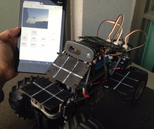
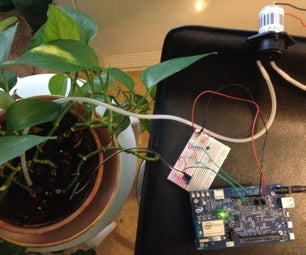
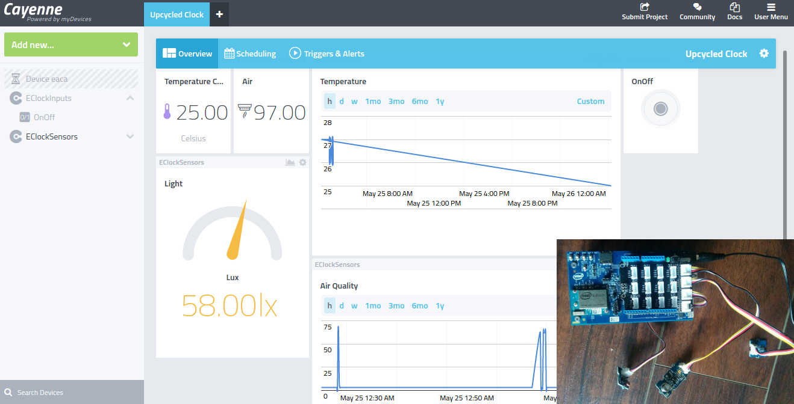
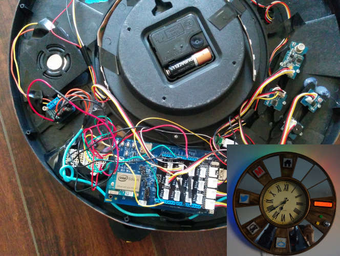

Environmental Monitoring Rover
This project is inspired by the Mars Curiosity Rover, I don't expect this rover to make it to Mars! but you can mimic it and implement some cool features using the Intel Edison board. Having said that ,on mother
Earth you can find industrial applications for this, to monitor hazardous condition.

Plant Monitoring and Care
Follow this project to monitor and create an auto control plant watering system for your house plants. Monitor the following environmental variables using Xively.com to keep your plants healthy through the summer/winter season

Posting sensor data to Cayenne
When I attended Makerfaire Bay Area, California, a couple of years ago , I heard a talk by the folks at myDevices, who build an IoT platform called– Cayenne,
which has an online IoT dashboard that takes most of the complication out of creating hardware-oriented programming, originally it worked with just the Raspberry Pi, and is now available for the Arduino as well.
In addition, you also have a feature where you can use MQTT to post sensor data to Cayenne IoT dashboard, this means we can use the Intel Edison to post sensor data as shown in the picture above. For more info about Cayenne check out the documentation at https://mydevices.com/cayenne/docs/

Upcycle an Old Clock
We have an old clock, the idea here is to upcycle the clock and add some smart capabilities to it using the Intel Edison. Read more about this award winning project..